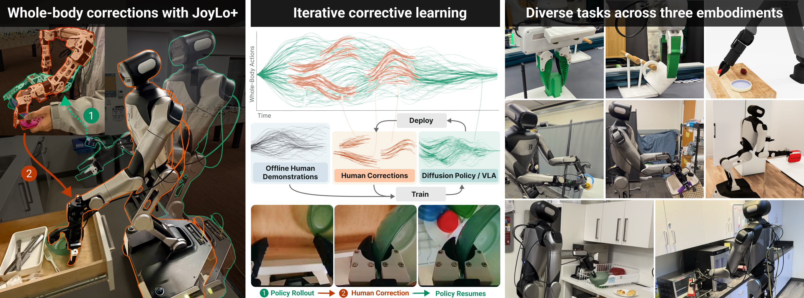
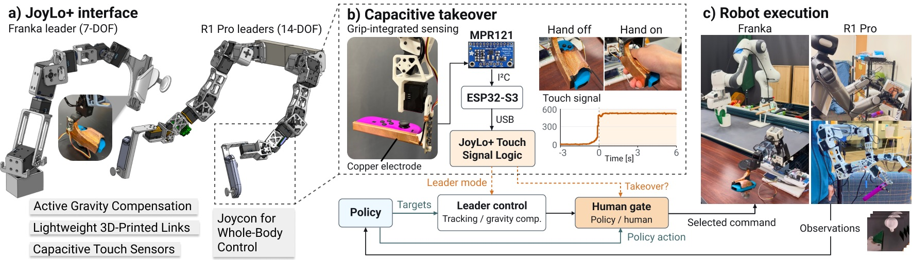
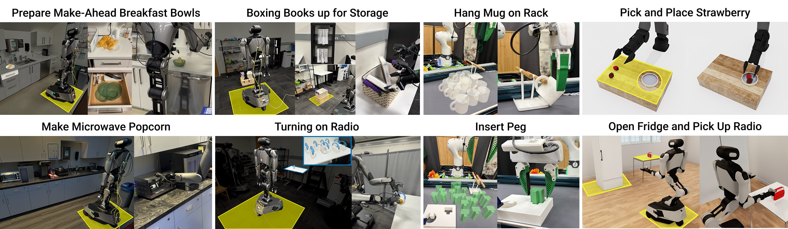
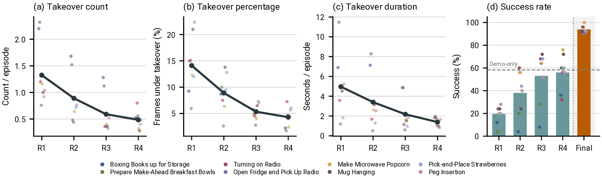
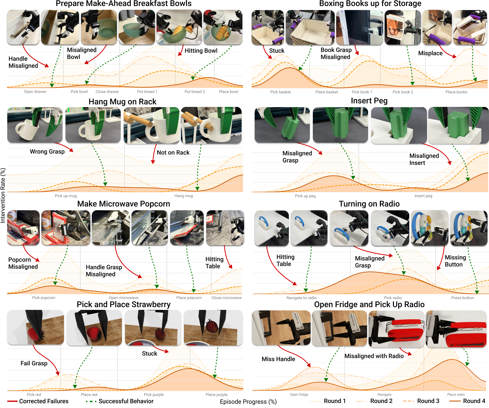
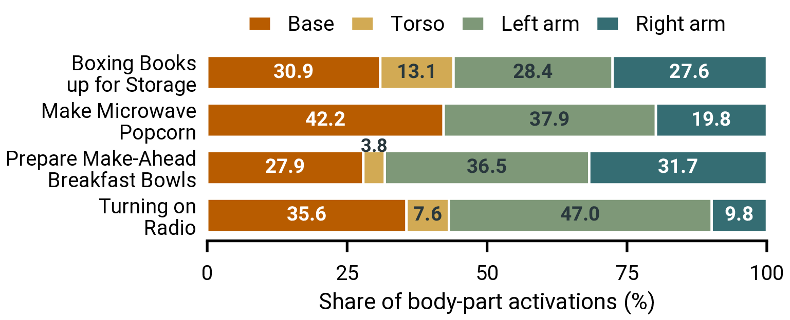
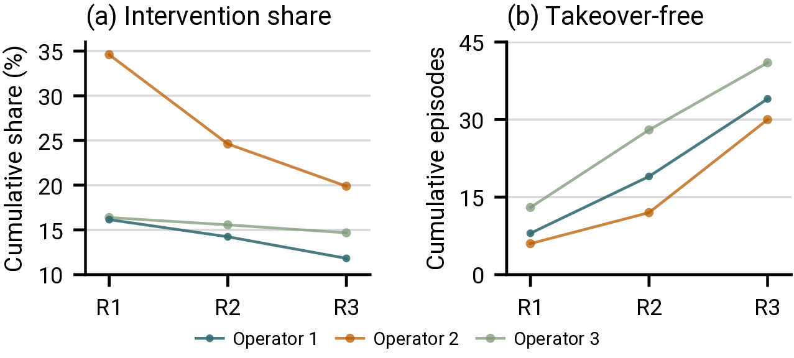

Policies trained offline from teleoperated demonstrations can degrade outside their training distribution. This gap is particularly acute in long-horizon whole-body mobile manipulation, where long horizons amplify compounding errors and coordinated arm, torso, and base motion makes exhaustive demonstration coverage impractical. We introduce I3L, an integrated hardware and learning system that couples targeted whole-body correction with iterative policy refinement to address this last-mile reliability gap. Its low-cost, open-source JoyLo+ interface uses policy-tracking leader arms and touch-triggered takeover to enable coordinated corrections across the arms, torso, and mobile base, while repeated deployment and retraining allow operators to target failures of the updated policy. We evaluate I3L across three robot embodiments and eight simulated and real-world tasks, including four long-horizon whole-body mobile manipulation tasks. Controlled simulation comparisons show that four-round HG-DAgger achieves the highest final success on both simulation tasks. Under this protocol, I3L improves autonomous success over the base policies by an average of 68.3 percentage points and achieves at least 90% success on every task, outperforming demonstration-only training by 35.6 percentage points on average under matched training-trajectory budgets. Across four rounds, task-averaged takeover duration per episode decreases by 72%. Together, these results show that I3L helps close the last-mile gap between offline training and reliable deployment and provides practical insights into collecting and using corrections for long-horizon whole-body mobile manipulation.
Inside JoyLo+
Explore the leader arms in 3D. The hardware overview is available below.

JoyLo+ correction interface. Motorized arm leaders track policy targets during autonomous execution and switch to compliant current control during global takeover. Capacitive touch sensors trigger takeover, while JoyCon inputs control the torso, mobile base, and grippers. The interface supports single-arm and dual-arm configurations.
JoyLo+ is an actuated interface for human intervention during autonomous policy execution. We implement two configurations: R1 Pro JoyLo+, with two seven-joint leaders for bimanual whole-body mobile manipulation, and Franka JoyLo+, with one seven-joint leader for single-arm manipulation. Building on GELLO's kinematic leaders and JoyLo's actuated interface, both configurations combine policy-target tracking, capacitive-touch detection, and compliant hand guidance.
Actuated leaders for tracking and correction. During autonomy, the actuated leaders track the policy's arm joint targets, physically displaying the commanded configuration on the device used for correction. During intervention, gravity compensation supports the leaders while the operator guides their motion.
Grip-integrated sensing for direct takeover. Conductive copper electrodes in the gripping surfaces, read by an MPR121 capacitive-sensing board, let the operator request control simply by grasping the interface, without first displacing a tracking leader. On takeover, the interface changes from policy tracking to gravity-compensated hand guidance.
Whole-body intervention. On R1 Pro, touching a grip or providing a JoyCon input transfers command of both arms, the torso, the base, and the grippers together. Releasing the interface returns control to the policy, which replans from the corrected state as the leaders resume tracking.
| Component | Qty. | Unit | Subtotal |
|---|---|---|---|
| XM430-W350-T servo | 4 | $220 | $880 |
| XC330-M288-T servo | 3 | $50 | $150 |
| U2D2 USB adapter | 2 | $30 | $60 |
| Power supply (12 V / 5 V) | 2 | $25 | $50 |
| 3D-printed links (set) | 1 | $15 | $15 |
| JoyCon pair (L+R) | 1 | $80 | $80 |
| Adafruit MPR121 touch sensor | 1 | $7.95 | $7.95 |
| LILYGO T-Display S3 | 1 | $9.54 | $9.54 |
| Conductive copper tape | 1 | $5 | $5 |
| Listed-component subtotal | $1,257.49 |
JoyLo+ component cost estimate (USD). One R1 Pro leader motor/link assembly plus the listed accessories. Each R1 Pro leader uses four proximal XM430 and three distal XC330 servos; the Franka leader uses three XM430 and four XC330 servos of the same models. Sensor and microcontroller prices are retail estimates and the copper-tape cost was supplied by the authors, so this is a listed-component subtotal rather than a complete per-arm or bimanual-system price: the quantities above include a single MPR121 board and microcontroller, whose allocation across two leaders is not broken out. The deployed robot, tax, and shipping are excluded.
Starting from a demonstration dataset D0, each round deploys the previous policy and collects a labeled rollout dataset through JoyLo+. Under HG-DAgger filtering, only the original demonstrations and the active intervention frames from all rounds are retained for training. Pre-intervention and on-policy frames are excluded to concentrate training on human demonstrations and corrective supervision.
Each round trains from the same starting weights rather than continuing from the previous round's policy: the same pretrained checkpoint for the π0.5-based VLA, and the same initialization for diffusion policies. As earlier failures become less frequent, corrections naturally shift toward downstream stages such as transport and placement, producing an emergent failure-mode curriculum.

Evaluation tasks and initialization randomization. Representative images show initial configurations and successful task outcomes. The eight tasks span 29 annotated subtasks (2–6 per task). Across the four real-world R1 Pro tasks, task executions average approximately 83 seconds, with book storage and breakfast preparation averaging close to two minutes each. Yellow mats indicate the R1 Pro base initialization regions as well as where some task-relevant objects are randomized before each episode.
We evaluate on eight tasks across three robots. Controlled simulation (A1, R1 Pro): Pick-and-Place Strawberries and Open Fridge and Pick Up Radio in BEHAVIOR, used for collection-schedule and learning-strategy comparisons. Fixed-base manipulation (Franka): peg insertion and mug hanging, precision-oriented contact-rich tasks using the single-arm JoyLo+. Whole-body mobile manipulation (R1 Pro): four long-horizon real-world BEHAVIOR tasks: Prepare Make-Ahead Breakfast Bowls, Boxing Books for Storage, Make Microwave Popcorn, and Turning on Radio.
| Task | Base | 100 demos | 100 corrections (ours) |
|---|---|---|---|
| Simulation | |||
| Pick-and-Place Strawberries | 53.2% | 55.6% | 92.8% |
| Open Fridge and Pick Up Radio | 39.6% | 30.4% | 90.0% |
| Real world (Franka) | |||
| Mug Hanging | 6/25 (24%) | 17/25 (68%) | 23/25 (92%) |
| Peg Insertion | 7/25 (28%) | 12/25 (48%) | 23/25 (92%) |
| Real world (R1 Pro) | |||
| Prepare Make-Ahead Breakfast Bowls | 1/25 (4%) | 19/25 (76%) | 24/25 (96%) |
| Boxing Books up for Storage | 3/25 (12%) | 13/25 (52%) | 23/25 (92%) |
| Make Microwave Popcorn | 5/25 (20%) | 20/25 (80%) | 25/25 (100%) |
| Turning on Radio | 6/25 (24%) | 14/25 (56%) | 24/25 (96%) |
Autonomous full-task success before and after additional data collection. Base policies receive 100 additional demonstrations or 100 corrective trajectories through four HG-DAgger rounds.
Additional demonstrations improve base-policy success by 32.7 percentage points on average across the eight tasks, while four-round HG-DAgger improves it by 68.3 points, a 35.6-point advantage over collecting 100 additional demonstrations. Four-round HG-DAgger outperforms both baselines on every task, reaching at least 90% success throughout. On the four long-horizon real-world BEHAVIOR tasks, corrections provide an average advantage of 30 percentage points over additional demonstrations.

Intervention burden and task completion across correction rounds. In (a–c), the dark line shows the equal-weight mean across eight tasks; (b) measures the fraction of execution under intervention, and (c) measures time under intervention per episode. In (d), rounds 1–4 show takeover-free collection episodes. The final bar and dashed demo-only baseline (58.3%) compare autonomous evaluation success under matched training-trajectory budgets.
From Round 1 to Round 4, the mean number of takeovers per episode decreases by 63.4%, the mean fraction of frames under intervention decreases by 69.5%, and the mean total takeover duration per episode decreases by 72.0%. All three task-averaged measures decline in every round, while the final policies achieve at least 90% autonomous success on every task.

Task-stage intervention patterns across correction rounds. Orange curves show intervention rate over normalized episode progress; color and line style distinguish Rounds 1–4. Red annotations indicate failures and green annotations indicate successful behaviors. On Books, intervention around book pickup decreases substantially by Round 4, while a peak remains around basket pickup. On Breakfast Bowls, intervention during drawer opening and bread placement diminishes, while late-stage intervention remains around bowl placement.

Body-part activation shares during JoyLo+ corrections. Bars pool four 25-episode rounds; each part receives one vote per takeover segment after three consecutive active frames.
The motorized bilateral leaders control both arms, while the JoyCon controls the torso and base, allowing a single global takeover to coordinate several parts of the R1 Pro simultaneously.
Operators use JoyLo+ to correct more than arm motion: base activations account for an average of 34.2% of body-part votes across all four real-world tasks, while torso activations contribute an average of 8.2% in the three tasks where they occur. Arm usage varies by task, with comparable left and right arm shares in Books and Breakfast but larger left-arm shares in Radio and Popcorn.

Operator study on Franka mug hanging. (a) Cumulative fraction of timesteps under human control. (b) Cumulative takeover-free episode counts.
We examine policy improvement and intervention burden across three teleoperators with varying levels of experience on Franka Mug Hanging. Each operator collects 25 episodes per round over three correction rounds, totaling 225 episodes.
Cumulative intervention share decreases for all three operators, from 16.1% to 11.8%, 34.6% to 19.9%, and 16.4% to 14.7%. By Round 3, takeover-free episodes account for 40–55% of each operator's cumulative collection, suggesting that I3L enables iterative refinement with declining intervention burden across users with varied teleoperation experience.
| Setting | Residual | BC (all data) | SIRIUS | HG-DAgger |
|---|---|---|---|---|
| Open Fridge and Pick Up Radio | ||||
| Single round (100) | 21.6 | 79.2 | 73.2 | 80.0 |
| Round 1 (25) | 16.0 | 70.8 | 54.8 | 51.6 |
| Round 2 (50) | 24.0 | 86.4 | 68.4 | 72.4 |
| Round 3 (75) | 30.0 | 87.2 | 70.4 | 82.0 |
| Round 4 (100) | 19.6 | 88.0 | 71.6 | 90.0 |
| Pick-and-Place Strawberries | ||||
| Single round (100) | 45.2 | 14.8 | 76.0 | 89.2 |
| Round 1 (25) | 49.2 | 0.4 | 70.8 | 75.6 |
| Round 2 (50) | 45.6 | 1.2 | 78.8 | 88.4 |
| Round 3 (75) | 40.0 | 4.4 | 37.6 | 88.4 |
| Round 4 (100) | 46.8 | 10.8 | 78.8 | 92.8 |
Correction-learning comparison in simulation. Entries report full-task success rates (%), averaged over five evaluation seeds. Numbers in parentheses indicate cumulative corrective trajectories. The best result for each task is highlighted.
Four-round HG-DAgger achieves the highest final success on both simulation tasks. BC (all data) leads at intermediate rounds and finishes close to HG-DAgger on Open Fridge, but performs poorly on Strawberries throughout. SIRIUS improves steadily on Open Fridge, while its Strawberries performance drops sharply at Round 3 before recovering. Residual learning shows little final benefit from iteration on either task. Additional correction rounds alone do not guarantee better policies: the benefit of iterative collection depends on the learning strategy used to incorporate the resulting data.